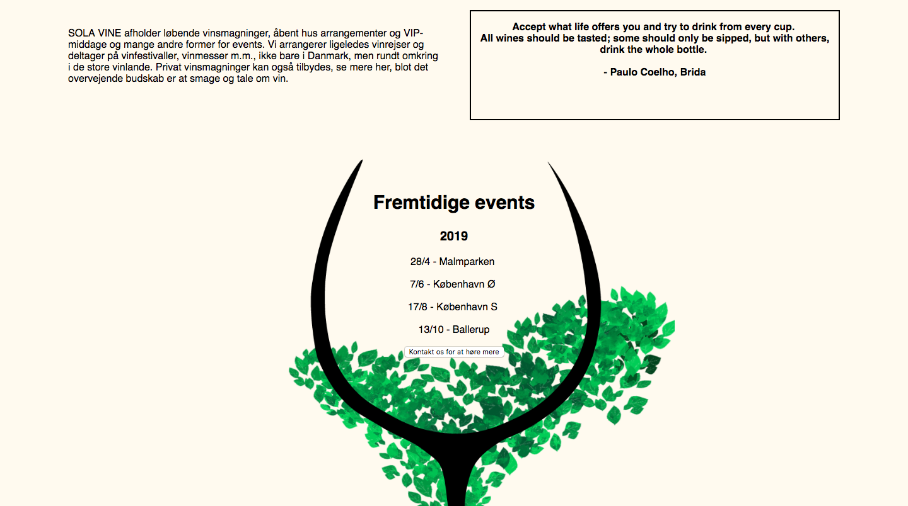

Teamet ‘Grundlæggende Indhold’ har hidtil været mit yndlings tema og det jeg så frem til allermest. Her lærte jeg om al forarbejde inden optagelsen, selve optagelsen og postproduktion.
Jeg har nu bedre kendskab til:

metoder til brugertest:
5-sek test, BERT, lighthouse og tænke-højt tekst
teorier, metoder og værktøjer til styring af medieproduktion:
SCRUM - burn down chart